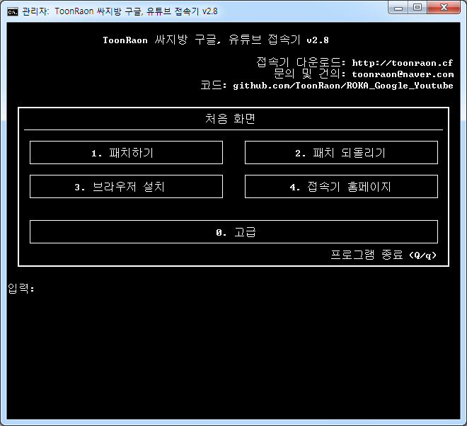

Toggle navigation
툰라온 싸지방 구글, 유튜브 접속기
홈
기타 버전
주소창에
toonraon.cf
를 입력하여 쉽게 접속 가능합니다.
싸지방
에서까지
스트레스
받을 필요는 없잖아?
접속기를 사용하여 구글과 유튜브를 마음껏 즐기세요!
접속기 다운로드
다른 버전 다운로드하러 가기
웹 브라우저 다운로드
추천!
설마 21세기에
인터넷 익스플로러
쓰려는 전우 없제?

SNS 공유하기
소스 코드 보기
Github
ToonRaon 싸지방 접속기는 오픈 소스입니다.
누구든지 코드를 수정하여
접속기 성능 향상에 도움
을 줄 수 있습니다.
Please enable JavaScript to view the
comments powered by Disqus.
 Github
Github